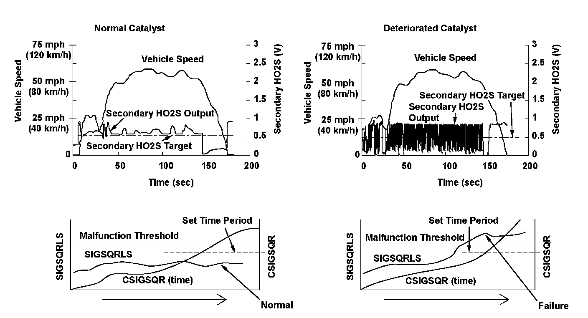
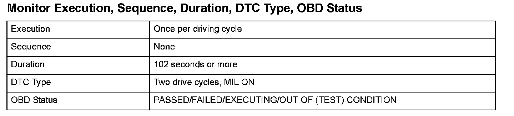
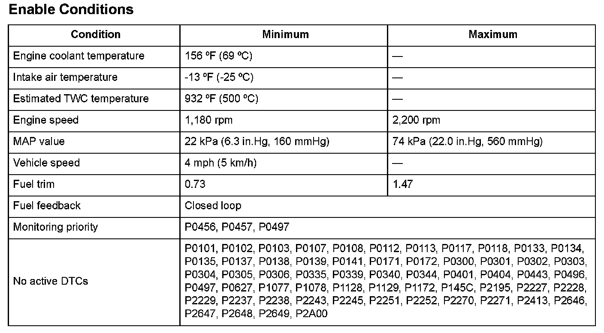
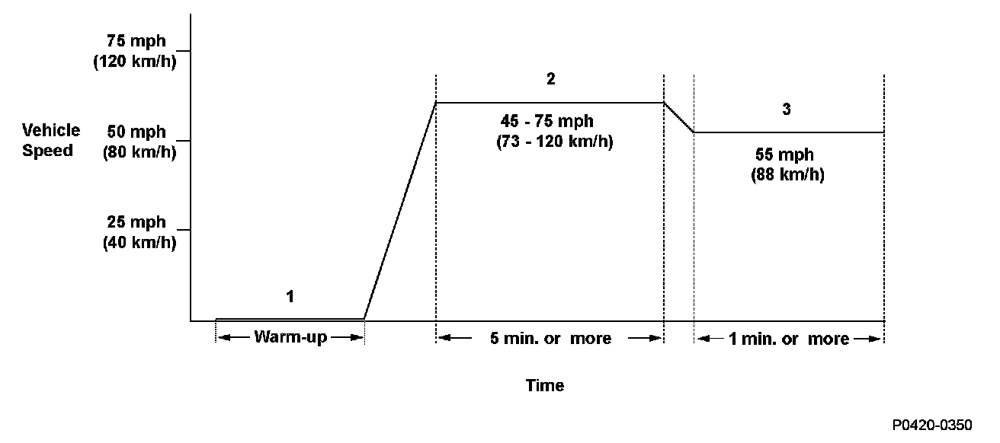

Advanced Diagnostics
DTC P0420: Rear Bank Catalyst System Efficiency Below Threshold (Bank 1)
General Description
The three way catalytic converter (TWC) converts hydrocarbons (HC), carbon monoxide (CO), and oxides of nitrogen (NOx) in the exhaust gas to water vapor, carbon dioxide (CO2), and dinitrogen (N2).
The TWC efficiency does not depend entirely on engine conditions or the deterioration level of the TWC. It can be optimized by stabilizing the secondary HO2S output.
If the TWC deteriorates, the air/fuel ratio downstream of the TWC (the secondary HO2S output) often differs from the target secondary HO2S output, and the status is represented by the parameter (SIGSQRLS).
Therefore, if the SIGSQRLS exceeds a specified value for a set time, a malfunction is detected and a DTC is stored.

Monitor Execution, Sequence, Duration, DTC Type, OBD Status

Enable Conditions
Malfunction Threshold
The number of detections is 752 (CTAGLT67) or more.

Driving Pattern
1. Start the engine. Hold the engine speed at 3,000 rpm without load (in Park or neutral) until the radiator fan comes on.
2. Drive the vehicle at a speed between 45 - 75 mph (73 - 120 km/h) for at least 5 minutes, to warm up the TWC.
3. Set a vehicle speed of 55 mph (88 km/h) on the cruise control, and drive for at least 1 minute.
- Drive the vehicle in this manner only if the traffic regulations and ambient conditions allow.
Diagnosis Details
Conditions for illuminating the MIL
When a malfunction is detected during the first drive cycle, a Temporary DTC is stored in the PCM memory. If the malfunction recurs during the next (second) drive cycle, the MIL comes on and the DTC and the freeze frame data are stored.
Conditions for clearing the MIL
The MIL will be cleared if the malfunction does not recur during three consecutive trips in which the diagnostic runs.
The MIL, the DTC, the Temporary DTC, and the freeze frame data can be cleared by using the scan tool Clear command or by disconnecting the battery.